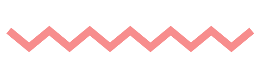

QR-Гид
Приветствуем вас в Калачинске!
Воспользуйтесь новым QR-Гидом по нашему городу.
QR-Гид
Воспользуйтесь новым QR-Гидом по нашему городу.
QR-Гид

Привет, меня зовут Никита, я учусь в 1 классе. Если вы находитесь на этом сайте, то с большой вероятностью вы - турист, ну или же вам просто интересны достопримечательности Калачинска. Я решил, что QR-код - это очень полезная и практичная вещь, ведь в него можно вписать всю информацию об объекте, и все это будет занимать всего-то 3 сантиметра! Я сделал виртуальный гид по Калачинску, где главная фишка - мобильность.
Получайте доступ к информации о местах находясь где угодно! Вам не нужен компьютер, все что нужно уже у вас в кармане.

Интересно здание или место? Хотите сходить, но не знаете где оно? А вдруг оно закрыто? Просто зайдите к нам и посмотрите часы работы, адрес и фото посредством QR-кода.

Уже нет идей куда сходить, ведь вы думаете, что прошлись везде? Откройте нашу коллекцию и посмотрите самый широкий спектр мест и достопримечательностей.
Вряд ли вы такое уже видели. QR-гид в Калачинске в своем роде инновация! Попробуйте перейти к новизне, не стоит спрашивать прохожих, просто зайдите на сайт.
Гимназия №1
Первая школа Калачинска на ул. Калинина.
Мемориал Славы
Единственный Мемориал Славы героям Великой Отечественной Войны